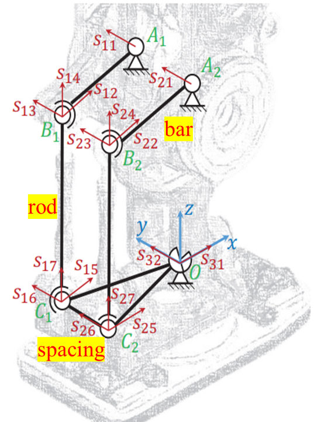
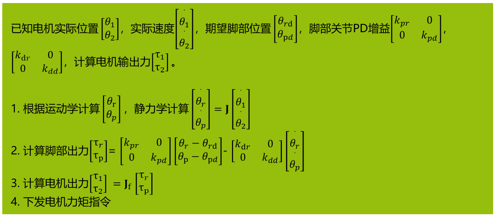
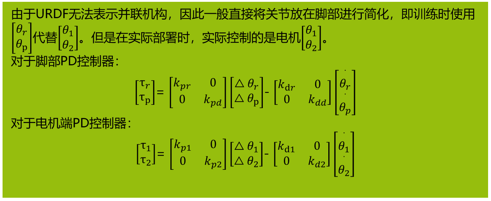
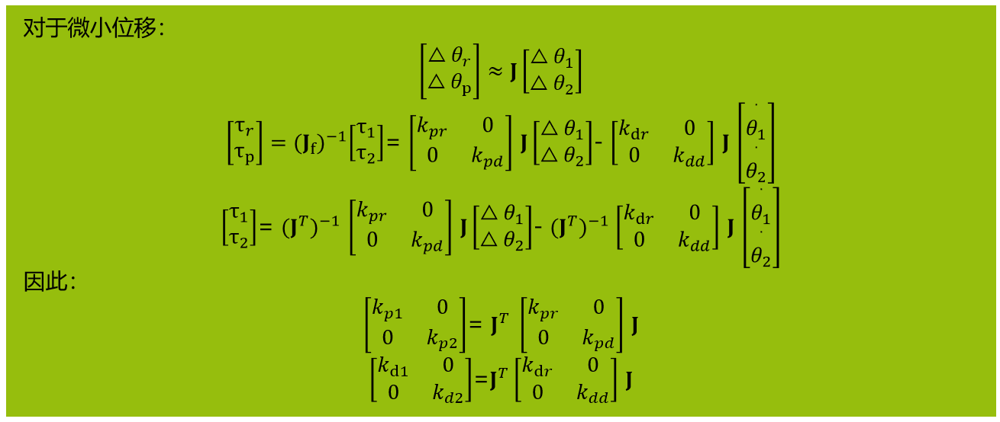
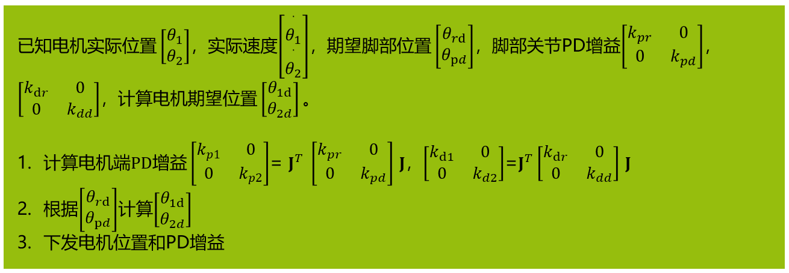

众擎机器人脚踝并联机构分析及公式推导
一、机构自由度DoF
自由度M根据Grubler公式：
对于该机构：
总构件数（虎克铰作为一个高副看待，不计算中心十字）
运动副（高副）数（虎克铰作为一个高副看待）
总自由度（低副）数（一个连杆两端的两个球铰有一个局部自由度，看作一个球铰和一个虎克铰）
因此：
该并联机构自由度数为2，2电机输入在A1,A2，末端构件脚部有两个旋转自由度，为全驱动机构。

二、逆向运动学
1. 建立坐标系
为了计算方便，把世界坐标系建在虎克铰中心，以初始姿态时的虎克铰两个副的方向作为X轴，Y轴（如上图）。
则脚部构件的旋转矩阵R为YX欧拉角（注意先后顺序，如果虎克铰两轴机械设计相反，则顺序相反）。
记为 ，则旋转矩阵R为：
众擎代码为：
2. 计算BA_bar旋转角度θ
注意到B点既在BA_bar，又在CB_rod上，因此B点在以C为圆心，rod长为半径的球面上，同时又在A为圆心，bar长为半径的空间圆上。
首先计算BA_bar初始向，圆心与球心向量
将B点带入球面约束方程：
代码中：
即：
由于电机轴线沿Y方向，因此可表示为：
因此：
代码：
即：
因此：
用三角等式消去其中余弦项，得到：
求解一元二次方程：
该方程有两个根，对应的是两种不同的构型，构型由初始构件安装条件确定，在运动过程中构型不会变化（除非在奇异点处有可能发生构型变化），本构型求根时取+号。
之后，可以根据求解角度计算出机构任何一点的空间位置，得到逆向运动学。
三、雅克比矩阵
雅克比矩阵的目的是推导末端欧拉角速度 与电机输入速度 的关系。
需要通过速度之间的关系推导 。
1. 欧拉角速度与角速度转换
如果脚部输入速度是，求脚部的 。
加上线速度：
代码中的计算：
2. 以沿杆速度建立等式
对于一个刚体杆，各点沿杆方向的线速度均相等，以此建立等式。
2.1 从电机端计算沿杆速度
设电机速度为 ，转轴均沿Y轴正方向 ，则B点沿BC杆速度可表示为：
对于两个支链：
代码中 的计算：
2.2 从脚部计算沿杆速度
设脚部构件原点的速度为 ，则C点沿BC杆速度可表示为：
对于两个支链：
代码中的计算
3. 计算雅克比矩阵
由沿杆速度相等，以及欧拉角速度和角速度关系：
因为：
所以：
代码中计算了 和 ：
4. 力雅克比矩阵
上面探讨的是速度之间的关系，下面讨论电机输入力与脚部力的关系。
由虚功原理可得：
两边转置：
因此：
相关代码：
四、正向运动学
大部分并联机构的正向运动学没有解析解，一般采用数值迭代的方式进行计算。最常见的迭代算法是Newton-Raphson算法（一种梯度下降法），众擎采用的就是这个方法。
1. Newton-Raphson迭代法
Newton-Raphson 迭代法具体迭代过程如下所述：
输入电机角度 ，初始脚部欧拉角 ，误差极限ER，最大迭代次数m
计算 下的逆解 和雅克比矩阵
计算，
若的范数小于ER，则迭代结束，正解为 ；否则，跳至第二步；
检查迭代次数，若其超过m ，则输出迭代过程不收敛
2. 代码
这个方法的收敛性有待验证，但是好在实际应用过程中基本上用不到运动学正解。
五、实际部署
由于URDF无法表示并联机构，因此一般直接将关节放在脚部进行简化，即训练时使用代替。但是在实际部署时，实际控制的是电机。

六、PD增益



此方法计算量较大，但是如果想要将PD控制器做在伺服里，则应该采取该方法。